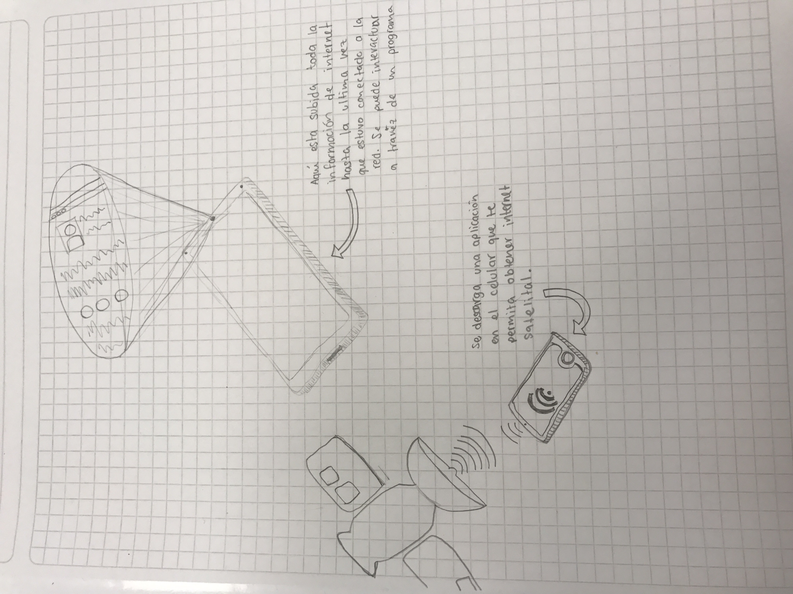

¿Cual es el Problema?
Que hay muchas zonas en donde no tienes covertura de internet
*Primera solucion:
Que los datos de internet puedan ser adquiridos via satelital tipo GPS, y que no provegan de repetidoras de señal. Pero que a la vez fuera muy accecible para todos los celulares moviles independientemente de su componentes fisicos (Hardware). Para esto uno tendria que descargar una aplicacion previamente diseñada y perfeccionada que nos de conexion directa con los satelites cuando lo nesecitemos. Por ejemplo en zonas boscosas o en deciertos donde la cobertura de antenas repetidoras de señal es casi nula.
*Segunda solucion (Cinecia Ficcion):
Crear un tipo de inteligencia artifical que tenga en su base de datos toda la informacion de internet previamente subida a la red. En pocas palabras lo que se propone es descargar toda la informacion de internet a una sola base de dato o disco duro por asi decirlo, asi se tendria acceso a toda la informacion sin nesecidad de estar conectado a una red. Y esto seria un paso muy importante en el mundo tecnologico. Ya que se podria decir que de una manero u otra la historia de nuestra civilizacion se encuentra en distintas formas (videos, documentos, etc) en internet. Y esta seria una manera muy conveniente de "respaldarla" por asi decirlo. La inteligencia artificial nos ayudaria a accesar y navegar mas fluidamente entre los milloneos de metadatos y terabytes de informacion disponibles. Aunque tendria la limitante de la comunicacion via internet (whatsapp, facebook, twitter, etc), ya que no se tendria acceso a ningun tipo de conexion con otros usuarios o servidores..
A continuacion se muestra un pequeño boceto de las soluciones previamente propuestas.
